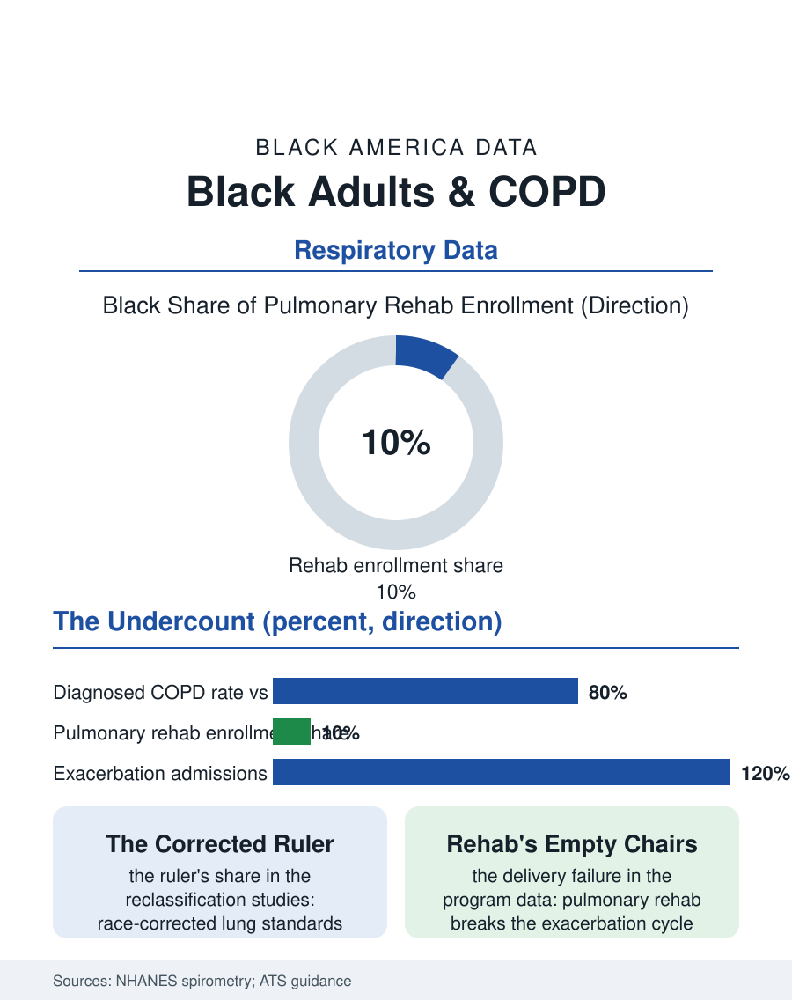

Black Public Health
The Corrected Ruler: Black Adults and COPD
Black COPD is underdiagnosed by a race-corrected ruler, under-rehabilitated by the access map, and over-hospitalized by the exacerbation cycle. The COPD file.

Chronic obstructive pulmonary disease, the emphysema and chronic bronchitis umbrella, presents a diagnostic puzzle in the Black data: Black adults report lower diagnosed COPD rates than white adults despite comparable or higher exposure to its causes, while their hospitalization and exacerbation outcomes run worse, the signature, familiar from the Parkinson's file, of underdiagnosis layered over real disease. This article reads the COPD file.
The Spirometry Question
The diagnosis of COPD runs through a machine and an equation, and both have been under scientific review. Spirometry, the breathing test that measures the obstruction, is performed less often on Black patients presenting with the symptoms in the primary care studies, the cough and breathlessness attributed to the smoking file's habits or the asthma file's overlaps, since asthma and COPD share presentations and the Black asthma burden's prominence gives the clinician a competing label. The equation controversy is the file's technical center: the lung function reference standards long applied a race correction, predicting lower normal values for Black patients on the basis of population averages, so that the same measured function read as normal for a Black patient and impaired for a white one, delaying the diagnosis in exactly the pattern the utilization data show. The respiratory profession's recent move to race-neutral reference equations, adopted by the major societies in the current era, is the file's live experiment: the reclassification studies project that substantial numbers of Black patients cross diagnostic and severity thresholds under the corrected equations, with consequences for treatment eligibility, disability determination, and the occupational lung files, a single methodological decision propagating through every downstream number. The exposure file underneath is the smoking history's, the menthol file's product doing its decades of work, plus the occupational dusts of the industrial files and the military's burn and dust exposures, the COPD burden of the veteran population being the exposure ledger's most documented page.
Exacerbations and the Hospital Door
Where the disease is diagnosed, its course diverges in the hospital data: Black patients' COPD exacerbations, the acute worsenings that drive the disease's costs and mortality, present to emergency departments at higher rates and convert to admissions at higher rates in the claims analyses, while the pulmonary rehabilitation programs, the exercise and education interventions with the strongest evidence for breaking the exacerbation cycle, enroll Black patients at rates far below their share of the disease, the programs' geography and referral patterns following the usual access map. The medication file shows the inhaler economy's disparities, the maintenance inhalers' costs under the pharmacy benefit designs producing adherence gaps that the pharmacist and claims studies measure in skipped fills, with the rescue inhaler's overuse in the claims data standing as the visible marker of the maintenance regimen's failure. The oxygen and ventilatory support file, the home oxygen prescriptions and the noninvasive ventilation of the severe disease, distributes on the same map. Smoking cessation, the one intervention that alters the disease's trajectory, closes the clinical file where the tobacco file left it: the highest quit attempt rates and the lowest success rates, the cessation pharmacotherapy and counseling prescribed least to the population whose disease most requires it, the compound interest of the menthol era presenting, in the COPD clinic, as a bill decades in the making.
The Reclassification Era
The COPD file closes on its methodological moment, because the race-neutral spirometry transition makes this disease the test case for a question the whole health section faces: how many of the measured racial differences in American medicine are the disease, how many are the delivery system, and how many are the ruler. The early reclassification analyses suggest the ruler's share was material, thousands of Black patients' impairment officially invisible under the corrected-for-race standard, their disability claims and occupational cases decided against a benchmark that assumed their lungs were supposed to be smaller. The profession's correction, whatever its imperfections, establishes the precedent the file honors: the reference standard is a choice, the choice has a history, and auditing the instruments is as much a part of the equity work as auditing the clinics. The bureau of this disease is the spirometer's printout, and for a century of Black patients it printed a reassurance the lungs themselves contradicted. The COPD file's final datum is the simplest: breathlessness is breathlessness, the obstruction is the obstruction, and the data now read it the same in every body, which the patients, whose breath was never race-corrected, could have reported all along.
More in Black Public Health
Hypertension Among Black Adults: Prevalence, Control, and Consequences
About 55 percent of Black adults have hypertension — the highest rate of any U.S. group. Prevalence, onset, control, and the stroke, heart, and kidney consequences in the data.
Diabetes Among Black Adults: Prevalence and Complications
Nearly one in five Black adults has diabetes, diagnosed or undiagnosed — and its complications fall with particular weight. The CDC data on prevalence, control, and outcomes.
Black Life Expectancy: The Gap at Birth and Its Causes
Black life expectancy at birth is about 73 years, roughly five years below the national figure — the summary measure of every health gap in this section. The CDC data.
Source: National Health and Nutrition Examination Survey spirometry data; American Thoracic Society race-neutral reference equation guidance; COPD outcomes literature.